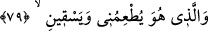
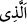

konusunda sebeplerin ve çalışıp kazanmanın geçerli olmadığına, bilakis bunların ezelî
seçim/ıstıfâ ile olduğuna işâret eder. Çünkü bütün makamlar, kesbî değil Allah’ın husûsî
vergisidir. Ayn-ı sâbiteye feyz-i akdesten hâsıl olmuştur. Zuhûru/ortaya çıkışı,
şartlarının ve sebeplerinin meydana gelmesiyle tedrîcen olur. Mahcûb/perdeli kimse
vehme düşer ve onun çalışılarak elde edilen kesbî bir şey olduğunu zanneder. Halbuki
hakîkatte böyle değildir.
Hâfız der ki:
Bir bölük halk, Sevgilinin vuslatına çaba ile erişmek ümidinde
Bir kısmı da işi takdire havale etmekte
79. Beni yediren, içiren O’dur.
Bu cümle, birinci sıfat cümlesine atfedilmiştir. Üç yerde mevsûlün (__WORD__) tekrarı,
sılalardan herbirinin hükmün muktezasına göre ayrı olduğuna delâlet etmek içindir.
“Beni yediren,” dilediği yemeği bana yediren ve dilediği içeceği bana “içiren”
yalnızca “O’dur.” Bana bedenimin organlarının kıvamı olan gıdayı yediren,
susuzluğumu dindiren ve azalarımın beslenip büyümesini sağlayan suyu içiren O’dur.
Yani O, benim râzık/rızık verenimdir. Yiyeceğim ve içeceğim O’nun katındadır.
Yedirmek ve içirmek, onun için sadece yiyeceği ve içeceği yaratmaktan ve ona mülk
olarak vermekten ibâret değildir. Yemek ve içmekle ilgili çiğnerken lezzet alma, yutma,
hazmetme, def-i hâcet ve benzeri şeyler de ‘yedirme ve içirme’ye dâhildir. Ebû
Hüreyre (r.a.)’ın dualarından birisi şöyledir:
“Allah’ım! Bana öğüten diş, hazmeden mide, rahat çıkaran dübür ihsan et.”
Âyet, tevekkül, rızâ, teslîm, tefvîz, sebepleri aradan kaldırma, tamamen Allah’a
yönelme ve mâsivallahtan yüz çevirmeye işaret eder.
Bahru’l-hakâik müellifi der ki: “Âyetteki yemekten maksad, gönüllerin kendisiyle
diri olduğu ubûdiyyet taâmıdır. Temiz içecekten murad da ruhların kendisiyle
tazelendiği rubûbiyyet sıfatının tecellîsinin zuhûrudur.
Zünnûn Mısrî şöyle demiştir: “Buradaki yiyecek, ma’rifet taâmıdır. İçecek ise
muhabbet şarabıdır.” Ardından şu beyti okumuştur:
Muhabbet şarabı ne hayırlı şaraptır
Ondan başka her şarap seraptır
Zunnûn’ın sözünün mânâsından, “Rabbimin katında gecelerim, O beni yedirir ve